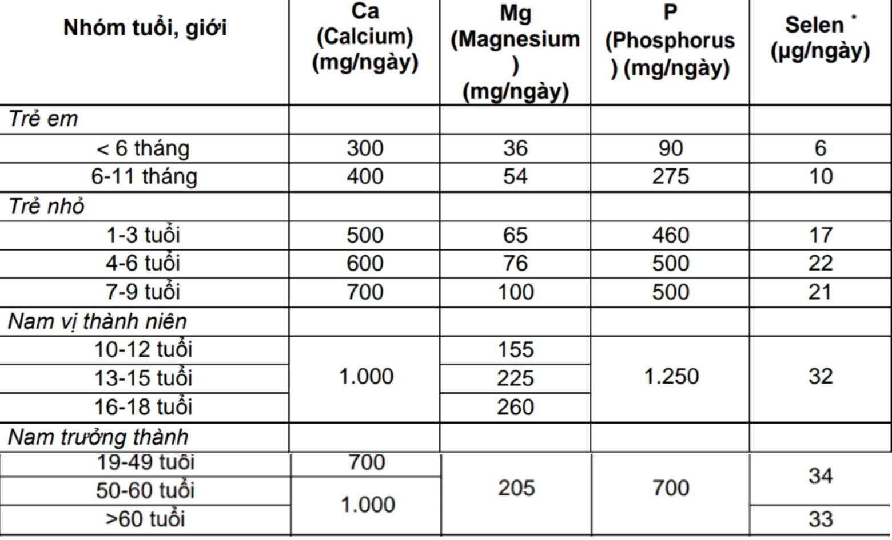
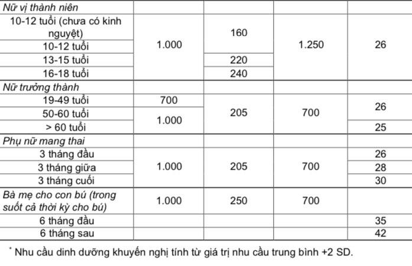
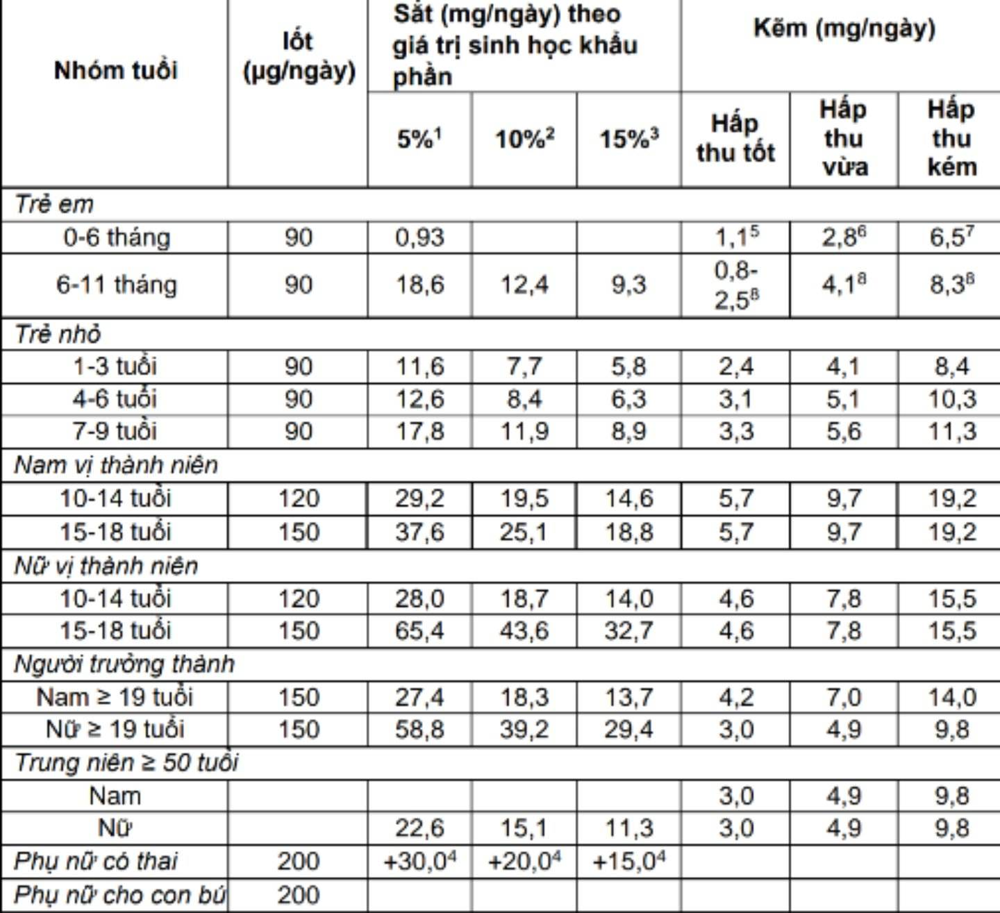

Bảng nhu cầu dinh dưỡng khuyến nghị cho người Việt Nam (Ban hành kèm Thông tư số 43/2014/TT-BYT ngày 24 tháng 11 năm 2014 của Bộ trưởng Bộ Y tế
1. Nhu cầu các khoáng chất và vi chất


Nhu cầu iot, sắt, kẽm

- Khẩu phần có giá trị sinh học sắt thấp (khoảng 5% sắt được hấp thu): chế độ ăn
đơn điệu, lượng thịt, cá <30g/ngày hoặc lượng vitamin C <25 mg/ngày.
- Khẩu phần có giá trị sinh học sắt trung bình (khoảng 10% sắt được hấp thu): khẩu
phần có lượng thịt, cá từ 30g – 90g/ngày hoặc vitamin C từ 25 mg – 75 mg/ngày.
- Khẩu phần có giá trị sinh học sắt cao (khoảng 15% sắt được hấp thu): khẩu phần
có lượng thịt, cá từ > 90g/ngày hoặc vitamin C từ > 75 mg/ngày.
- Phụ nữ có thai được khuyến nghị bổ sung viên sắt trong suốt thai kỳ. Phụ nữ thiếu
máu cần dùng liều bổ sung cao hơn, trẻ bú sữa mẹ, trẻ ăn sữa nhân tạo
, trẻ ăn sữa nhân tạo có nhiều phytat và protein nguồn thực vật.
Không áp dụng cho trẻ bú sữa mẹ đơn thuần.
Hấp thu tốt: giá trị sinh học kẽm tốt = 50% (khẩu phần có nhiều protein động vật
hoặc cá); hấp thu vừa: giá trị sinh học kẽm trung bình = 30% (khẩu phần có vừa phải
protein động vật hoặc cá; tỷ số phytat-kẽm phân tử là 5:15). Hấp thu kém: giá trị sinh
học kẽm thấp =15% (khẩu phần ít hoặc không có protein động vật hoặc cá).